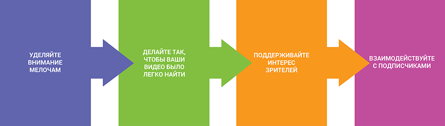

- YouTube
- Creators
Добро пожаловать в Академию для авторов – ресурс для тех, кто хочет добиться успеха на YouTube. Сегодня мы расскажем вам, как создать популярный канал на нашей платформе.
YouTube – это платформа, на которую ежеминутно добавляется более 400 часов видео на самые разные темы. Их смотрят и обсуждают пользователи со всего мира. Загрузить ролик на наш сайт может каждый. Достаточно создать канал и соблюдать простое правило: контент должен соответствовать принципам сообщества.
Прежде чем создать свой канал, лучше узнать, как это делают другие. Предлагаем вам советы авторов, которые уже добились успеха на нашей платформе.
Вирусный ролик может набрать большое количество просмотров и даже прославить вас, как, например, автора канала GrumpyCat. Но это вовсе не гарантирует вам дальнейший успех. Если вы хотите обрести преданную аудиторию, старайтесь делать так, чтобы все ваши ролики были одинаково интересны. (Видео на английском языке.)
Если вам интересен пример канала с выдержанным стилем, загляните на страницу Мишель Фан. Ее видео сняты без больших затрат, зато в единой концепции. (Видео на английском языке.)
Для начала продумайте общую концепцию канала и решите, в каком направлении он будет развиваться. Сформулируйте набор правил и следуйте им как при создании и обработке видео, так и при выборе элементов фирменного стиля.
Главное – искренне любить свое дело. Если через год у вас пропадет интерес к тому, чем вы занимаетесь, он исчезнет и у ваших подписчиков. А ещё будьте оригинальны. На YouTube практически нет рамок, и этим нужно пользоваться.
Чтобы понять, каким вы хотите видеть свой канал, задайте себе такие вопросы:
На этапе планирования очень важно определить аудиторию канала, ведь иначе вам не удастся заинтересовать зрителей.
На YouTube вам предоставлена почти полная свобода, и этим нужно пользоваться. Вот несколько ценных советов, которые помогут вам, когда вы начнете создавать ролики.
Думайте наперед. Это поможет вам создать канал, который непременно понравится зрителям.
Если вы решили создать канал, первым делом вам нужно тщательно обдумать его название. Зачем уделять этому большое внимание? Всё просто: как правило, название остается с каналом навсегда. Поэтому отнеситесь к его выбору серьезно. Не забывайте, что название – это ещё и элемент фирменного стиля. Оно должно быть связано с вашей общей концепцией и отражать тематику канала.
Войдите в свой аккаунт YouTube, нажмите на круглый значок в правом верхнем углу, а затем на значок в виде шестеренки. Откроется страница, на которой вы сможете создать новый канал, переименовать уже существующий и узнать его идентификатор.
Новый канал нужно настроить. Установите связь со своими аккаунтами в социальных сетях, задайте параметры конфиденциальности и выберите настройки оповещений. Также стоит подумать о том, хотите ли вы пользоваться дополнительными функциями, например добавлять свои значки. Если да, вам нужно будет пройти процедуру подтверждения канала.
Заменив стандартный значок канала и его фоновое изображение, вы создадите собственный стиль. Останется добавить описание и рассказать, чему посвящена ваша страница. Сделать это можно на вкладке "О канале".
Итак, вы создали канал и продумали, как будете его развивать. Самое время загрузить свой первый ролик. Очень важно сразу произвести хорошее впечатление, поэтому постарайтесь сделать видео максимально интересным и эффектным. Уделите достаточно внимания названию, описанию и значку ролика – от них во многом зависит количество просмотров. Ниже изложено несколько принципов, которым нужно следовать при публикации.
Если вы последуете этим рекомендациям, зрителям будет легче найти ваши видео.
Авторы канала Paul Gale Comedy используют подсказки, чтобы рассказать зрителям о других роликах, которые могут их заинтересовать.
Взглянув на значок почти каждого ролика серии "сделай сам" на канале Threadbanger, можно понять, что ведущий будет делать на этот раз.
Когда ваш канал наберет некоторое количество подписчиков, у вас появится новая задача: удержать аудиторию. Вот несколько советов, которые вам в этом помогут.
Все эти советы помогут вам привлечь новых подписчиков, увеличить время просмотра своих видео и стать популярным автором.
Кассандра Бэнксон и sWooZie дают советы о том, как привлечь первых сто подписчиков.
В своем трейлере автор канала RoxyRocksTV вкратце рассказывает о своем канале и призывает зрителей подписаться.
Найдите на YouTube несколько роликов на одну тему и посмотрите на их названия. Какие заинтересовали вас больше всего? Почему? Подумайте, стоит ли называть свои видео в таком же стиле.
Составьте расписание своих планов на ближайшие три месяца и подумайте, сколько времени и ресурсов вам потребуется на создание видео. Затем спланируйте свои действия по неделям.
Опишите стратегию развития своего канала. Каким вы хотели бы видеть его в ближайшем будущем и через пять лет? Как вы представляете себе его аудиторию? Как может измениться оформление канала?